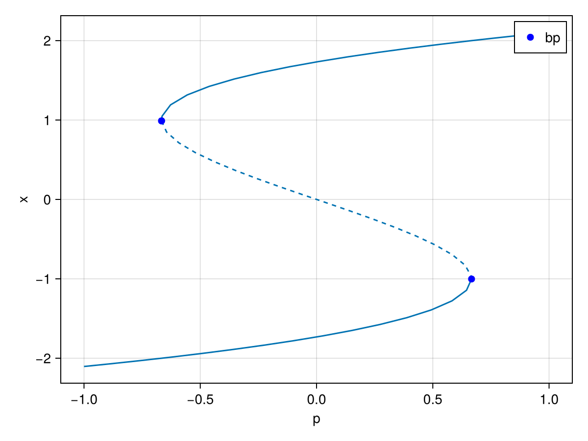

Plotting
Standard plots using the plot recipe from Plots.jl
Plotting is provided by calling recipes to Plots.jl. It means that to plot a branch br, you just need to call
# ] add Plots # You need to install Plots.jl before your first time using it!using Plotsplot(br)where br is a branch computed after a call to br = continuation(...). Plots can be customized using all the keyword arguments provided by Plots.jl. For example, we can change the plotting backend to the GR package and put a title on the plot by doing:
gr()plot!(br, title = "I have a branch!")or you can use a scatter plot
scatter(br)Then to save the plot, use savefig, for example:
savefig("myplot.png")Specific plotting keyword arguments
The available arguments specific to our plotting methods are
plotfold = true: plot the fold points with black dotsputspecialptlegend = true: display the legend corresponding to the bifurcation pointsvars = nothing: see belowplotstability = true: display the stability of the branchplotspecialpoints = true: plot the special (bifurcation) points on the branchbranchlabel = "fold branch": assign label to a branch which is printed in the legendlinewidthunstable: set the linewidth for the unstable part of the branchlinewidthstable: set the linewidth for the stable part of the branchplotcirclesbif = falseuse circles to plot bifurcation pointsapplytoX = identityapply transformationapplytoXto x-axisapplytoY = identityapply transformationapplytoYto y-axisunstable_plot_type = :dotsuse:dotsline for plotting the unstable part of the branch
for Makie plots:
dash_unstable_style = trueuse dashed line for plotting the unstable part of the branch
If you have several branches br1, br2, you can plot them in the same figure by doing
plot(br1, br2)in place of
plot(br1)plot!(br2)The bifurcation points for which the bisection was successful are indicated with circles and with squares otherwise.
Note that the plot recipes use the parameter axis as xlabel, and the passed variable as ylabel.
Choosing Variables
You can select which variables to plot using the keyword argument vars, for example:
plot(br, vars = (:param, :x))The available symbols are :x, :param, :itnewton, :itlinear, :ds, :θ, :n_unstable, :n_imag, :stable, :step,... and:
xifrecord_from_solution(seecontinuation) returns aNumber.x1, x2,...ifrecord_from_solutionreturns aTuple.- the keys of the
NamedTuplereturned byrecord_from_solution.
The available symbols are provided by calling propertynames(br.branch).
Plotting bifurcation diagrams
To do this, you just need to call
plot(diagram)where diagram is a branch computed after a call to diagram = bifurcationdiagram(...). You can use the keywords provided by Plots.jl and the different backends. You can thus call scatter(diagram). In addition to the options for plotting branches (see above), there are specific arguments available for bifurcation diagrams
codespecify the part of the bifurcation diagram to plot. For examplecode = (1,1,)plots the part after the first branch of the first branch of the root branch.level = (-Inf, Inf)restrict the branching level for plotting.
Plotting without the plot recipe
What if you don't want to use Plots.jl? You can define your own plotting functions using the internal fields of br which is of type ContResult. For example, in PyPlot, Gadfly, GR, etc., you can do the following to plot the branch (like the plot recipe plot(br, vars = (:param, :x))):
plot(br.branch.param, br.branch.x)You can also have access to the stability of the points by using br.stable. More information concerning the fields can be found in ContResult. For example, you can change the color depending on the stability:
col = [stb ? :green : :red for stb in br.stable]plot(br.param, br.x, color=col)You can also plot the spectrum at a specific continuation step::Int by calling
# get the eigenvalueseigvals = br.eig[step].eigenvals# plot them in the complex planescatter(real.(eigvals), imag.(eigvals))Standard plots using Makie.jl
Plotting is also provided by calling recipes to Makie.jl. It means that to plot a branch br, you just need to call
# ] add GLMakie # You need to install GLMakie.jl before your first time using it!using GLMakieBifurcationKit.plot(br)The keyword arguments to BifurcationKit.plot are the same as described above in the page. You can also combine diagrams with BifurcationKit.plot(br1, br2) or use BifurcationKit.plot!(ax, br) to add a branch to an existing plot.
You can also load
CairoMakie.jlif you prefer
Example
using CairoMakie, BifurcationKitk = 2F(x, p) = (@. p + x - x^(k+1)/(k+1))prob = ODEBifProblem(F, [0.8], 1., (@optic _); record_from_solution = (x,p; k...) -> x[1])opts = ContinuationPar(dsmax = 0.1, dsmin = 1e-3, ds = -0.001, p_min = -1., p_max = 1.)br = continuation(prob, PALC(), opts)f, ax = BifurcationKit.plot(br, dash_unstable_style = true)f
Plotting eigenvalues
After the computation of a branch br, it can be insightful to plot the real part of the eigenvalues along the branch. This can be done using
BifurcationKit.plot_eigenvals(br)